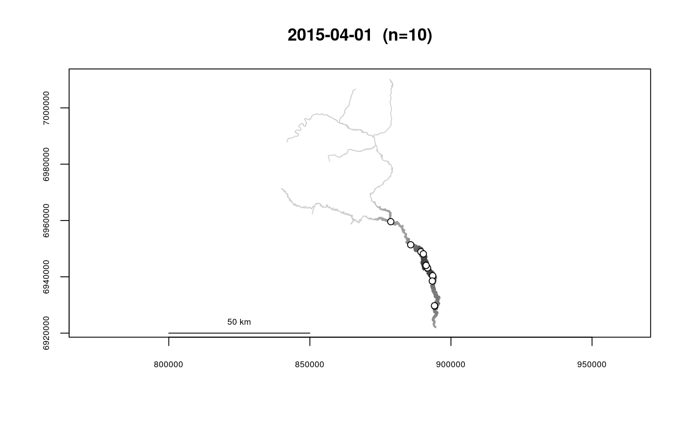
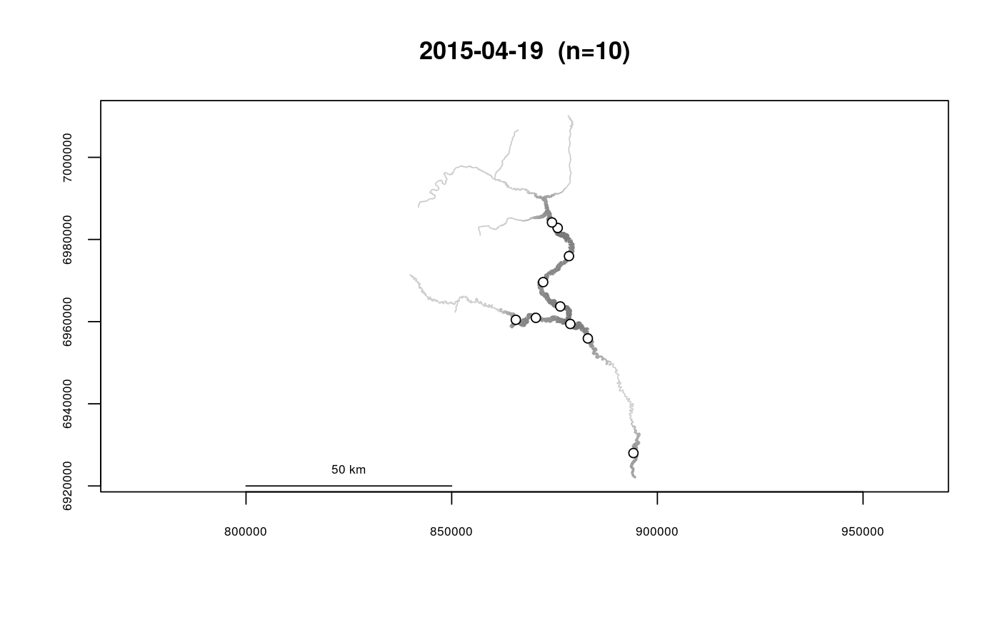
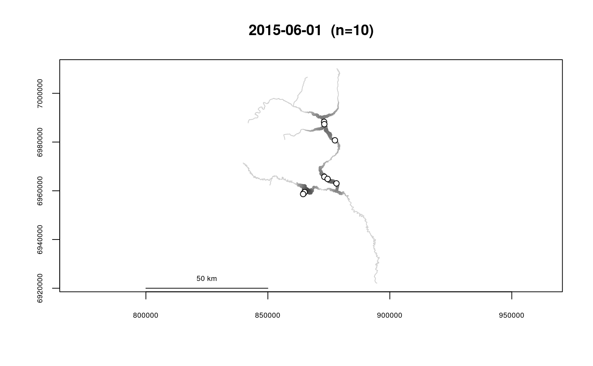
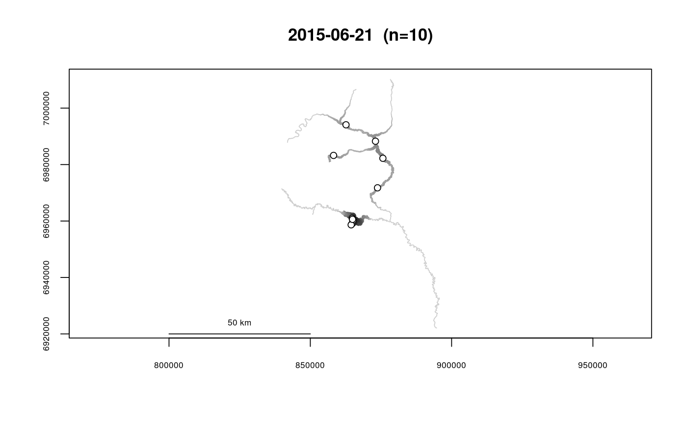
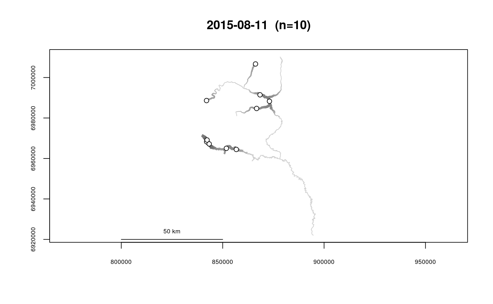
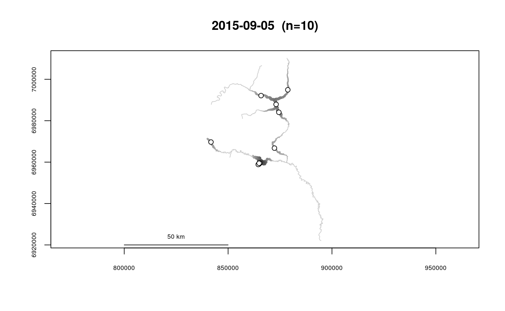
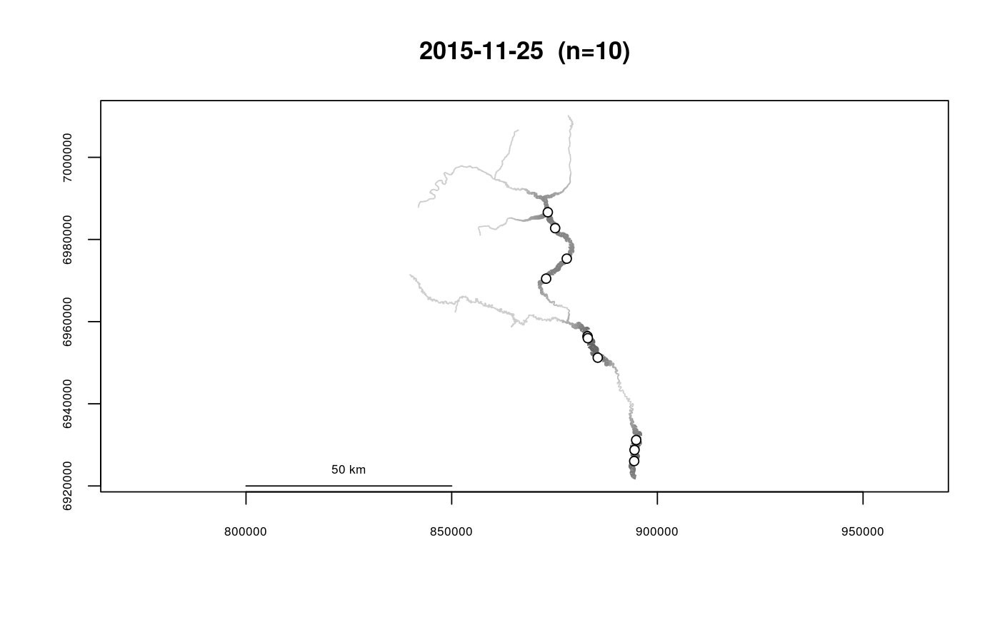

Calculate Kernel Density Using River Distance
Uses spatial point data (segment and vertex) to calculate a kernel density object to use in the output class plotting method,plot.riverdensity. Scaled kernel density is calculated at approximately regularly-spaced locations, with spacing specified by the user.
If an argument is used in the survey field, kernel densities will be
calculated for each unique value of survey, resulting in a separate
plot for each.
The purpose of this function is to generate a kernel density object to plot using plot(), see plot.riverdensity.
makeriverdensity(seg, vert, rivers, survey = NULL, kernel = "gaussian", bw = NULL, resolution = NULL)
Arguments
| seg | A vector of river locations (segment) |
|---|---|
| vert | A vector of river locations (vertex) |
| rivers | The river network object to use |
| survey | A vector of survey IDs corresponding to the values of
|
| kernel | The type of density kernel to use. Allowed types are
|
| bw | The kernel bandwidth to use. If |
| resolution | The approximate spacing of the river locations used for
kernel density calculation. Accepting the default ( |
Value
A river density object, see riverdensity-class.
Note
It is likely that calculation will be very slow. Use of this function with a river network for which segment routes has not yet been calculated is not recommended.
This function is distance-computation intensive, and may be slow-running if a river network is used that does not have segment routes and/or distance lookup tables for fast distance computation. See buildsegroutes and/or buildlookup for more information.
See also
plot.riverdensity, plotriverdensitypoints
Examples
data(Gulk, fakefish) Gulk_dens <- makeriverdensity(seg=fakefish$seg, vert=fakefish$vert, rivers=Gulk, survey=fakefish$flight.date)#> | | | 0% | | | 1% | |= | 1% | |== | 2% | |== | 3% | |== | 4% | |=== | 4% | |==== | 5% | |==== | 6% | |===== | 6% | |===== | 7% | |====== | 8% | |====== | 9% | |======= | 10% | |======== | 11% | |======== | 12% | |========= | 13% | |========== | 14% | |=========== | 15% | |=========== | 16% | |============ | 16% | |============ | 17% | |============ | 18% | |============= | 19% | |============== | 19% | |============== | 20% | |=============== | 21% | |================ | 22% | |================ | 23% | |================ | 24% | |================= | 24% | |================== | 25% | |================== | 26% | |=================== | 27% | |==================== | 28% | |==================== | 29% | |===================== | 30% | |===================== | 31% | |====================== | 31% | |====================== | 32% | |======================= | 33% | |======================= | 34% | |======================== | 34% | |======================== | 35% | |========================= | 36% | |========================== | 36% | |========================== | 37% | |========================== | 38% | |=========================== | 39% | |============================ | 39% | |============================ | 40% | |============================ | 41% | |============================= | 41% | |============================== | 42% | |============================== | 43% | |============================== | 44% | |=============================== | 44% | |================================ | 45% | |================================ | 46% | |================================= | 47% | |================================== | 48% | |================================== | 49% | |=================================== | 50% | |==================================== | 51% | |==================================== | 52% | |===================================== | 53% | |====================================== | 54% | |====================================== | 55% | |======================================= | 56% | |======================================== | 56% | |======================================== | 57% | |======================================== | 58% | |========================================= | 59% | |========================================== | 59% | |========================================== | 60% | |========================================== | 61% | |=========================================== | 61% | |============================================ | 62% | |============================================ | 63% | |============================================ | 64% | |============================================= | 64% | |============================================== | 65% | |============================================== | 66% | |=============================================== | 67% | |================================================ | 68% | |================================================ | 69% | |================================================= | 70% | |================================================= | 71% | |================================================== | 71% | |================================================== | 72% | |=================================================== | 73% | |=================================================== | 74% | |==================================================== | 74% | |==================================================== | 75% | |===================================================== | 76% | |====================================================== | 76% | |====================================================== | 77% | |====================================================== | 78% | |======================================================= | 79% | |======================================================== | 79% | |======================================================== | 80% | |======================================================== | 81% | |========================================================= | 81% | |========================================================== | 82% | |========================================================== | 83% | |========================================================== | 84% | |=========================================================== | 84% | |============================================================ | 85% | |============================================================ | 86% | |============================================================= | 87% | |============================================================== | 88% | |============================================================== | 89% | |=============================================================== | 90% | |================================================================ | 91% | |================================================================ | 92% | |================================================================= | 93% | |================================================================== | 94% | |================================================================== | 95% | |=================================================================== | 96% | |==================================================================== | 96% | |==================================================================== | 97% | |==================================================================== | 98% | |===================================================================== | 99% | |======================================================================| 99% | |======================================================================| 100%# # 10 plots will be created, recommend calling par(mfrow=c(2,5)) plot(x=Gulk_dens)